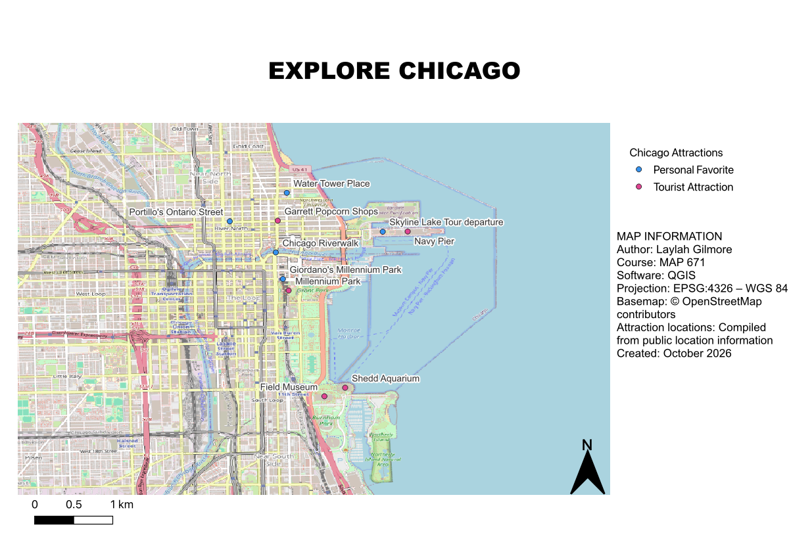

Download the High-Resolution Map (8,000 pixels)
This map explores popular tourist attractions and personal favorites throughout downtown Chicago, Illinois. Created using QGIS and OpenStreetMap, it highlights ten locations, including well-known destinations such as Navy Pier, Millennium Park, and the Field Museum. The locations are divided into two categories: tourist attractions and personal favorites, represented by different colored symbols. The purpose of this map is to demonstrate how geographic information systems (GIS) can be used to visualize points of interest and help visitors explore Chicago's attractions.
This map was created using QGIS for MAP 671. It uses OpenStreetMap as the basemap and EPSG:4326 (WGS 84) as the coordinate reference system. The map displays ten Chicago locations categorized as tourist attractions and personal favorites. Map created in October 2026. Basemap data: © OpenStreetMap contributors.